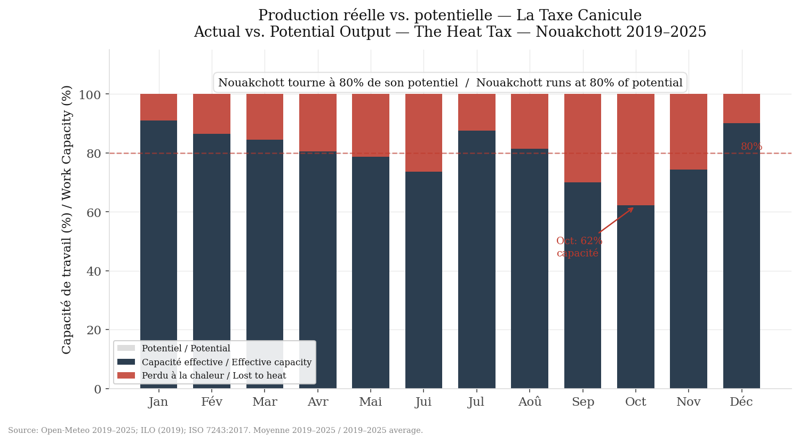

04 · Synthesis
The full equation
Two independent mechanisms, one result: heat costs Nouakchott 2,638 million MRU per year. Here's how the pieces fit together.
Two components, no double counting
The heat tax has two distinct parts that affect different populations. The first — lost income — hits workers exposed to heat, those without air conditioning. The second — the AC premium — hits those who have it, in the form of electricity bills. These aren't the same people. There's no double counting.
That's what makes the total so striking: whether you have AC or you don't, you pay. Exposed workers pay in hours of productivity. Air-conditioned businesses pay in kilowatt-hours. Heat taxes everyone — it just collects in different currencies.
Heat Tax = Lost Income + AC Premium
Lost Income = hours_lost × hourly_wage × exposed_workers
= 730 h × (1.4 × SMIG / 2,600 h) × 120,000
= 1,769 M MRU
AC Premium = equipped_spaces × annual_consumption × SOMELEC_rate
= 31,432 × kWh_month × 12 × 5.903 MRU/kWh
= 869 M MRU
Total = 1,769 + 869
= 2,638 M MRU
≈ $73M USD / year

The filled bar shows what Nouakchott produces. The empty space above shows what it could produce without the thermal constraint.
What the city loses
$73 million per year. That's what heat subtracts from Nouakchott, by our central estimates. The low scenario gives around $50 million; the high exceeds $100 million. Even the lower bound represents a considerable cost for a city of this size.
What this means
$73 million is a number you can compare. It's more than the annual budget of several Mauritanian ministries. It's the equivalent of thousands of salaries. It's a structural brake the city drags every year, without anyone having ever quantified it this way.
And it's a conservative number. We don't count peri-urban agricultural losses. We don't count health impacts — heat-related hospitalisations, chronic fatigue, effects on children and the elderly. We don't count the productivity loss of formal workers in poorly air-conditioned offices. We count only what's measurable with available data.
The central finding — Nouakchott operates at 80% of its potential — is an observation, not an accusation. The climate is what it is. But a cost that's been measured is a cost you can start to reduce.
We didn't model anything. We observed the city, and counted.